摘要: 很多成功的设计作品反映出画面的形式感，通过视觉要素的强弱对比，空间位置安排来形成画的视觉中心，从而产生一定的视觉效应，引导观者视觉流向！
构图在任何设计艺术中都是作品创作的第一步，它能将创作者的情感进行表达。构图是指艺运用构图把我们所想要表现的客观事物，通过主观思维进行提取，并通过创作者的巧思和设计技艺，合理地布局在画面上，并表达出创作者的情感。凡是让人印象深刻的设计作品都离不开好的构图。
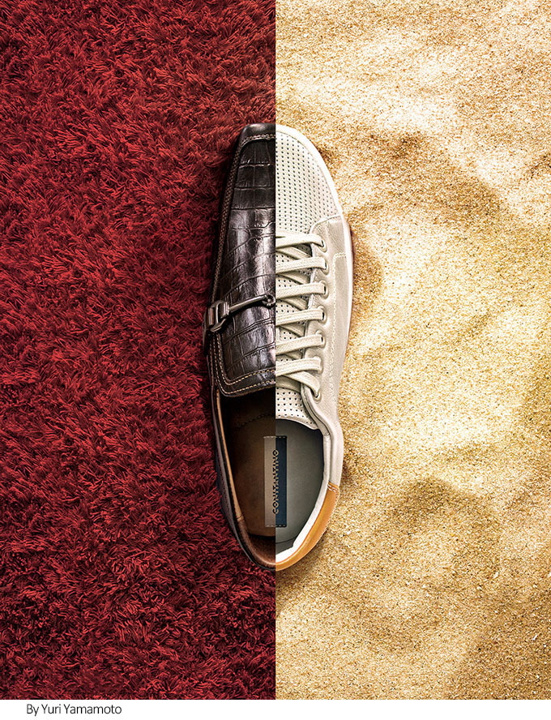
很多成功的设计作品反映出画面的形式感，通过视觉要素的强弱对比，空间位置安排来形成画的视觉中心，从而产生一定的视觉效应，引导观者视觉流向，尽可能的按照创作者构思的线路去观赏整个画面。作为设计师要擅于发现不同题材的视觉美点，才能寻找出最佳的构图方式。
正如罗丹所说的：“美到处都有的，对于我们的眼睛，不是缺少美，而是缺少发现美！”总的来说，构图是一种艺术创作活动，通过可视物的各个要素的组织、处理，达到即富有形式美又传达出情感的艺术效果。
构图中形式构成要点
构图是丰富多元的，任何创作作品都具有独特的构图和表现形式。但在长期的历史发展中还是可以总结出可遵循的、具有一定共性，以下就从几个共性较高的构成要点，谈谈它们本身的特征以及在平面设计中的应用。构图的要点概括起来就是一句话：“变化统一，在变化中求统一，在统一中求变化。”只有在变化统一完美结合时，画面才会主次分明，清新不俗。 推荐阅读：构图八大基本手法！你造吗？
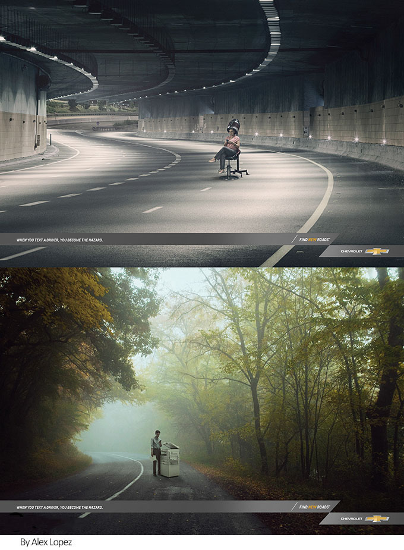
平衡
通过对阿恩海姆视知理论中平衡理论的学习，发现平衡的概念可分为物理平衡与视觉平衡，在设计作品中，组成它的要素必须达到一种平衡的状态。但从物理学角度是指物体上的各种力量相互抵消，如同一画面中有两个大小相等方向相反的物体，它们所处的作用力就可以相互抵消达到是平衡的状态，眼睛才能体验平衡。
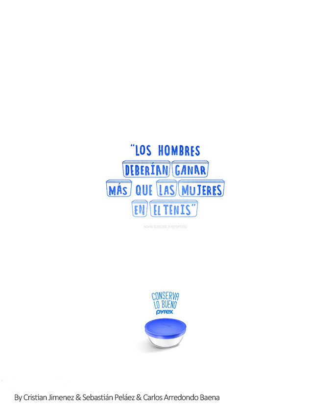
视觉平衡是指画面中看似质量和物理力不一样的物体通过颜色、大小、方向等要素的重新排列组合达到视觉的平衡值。掌握了构图中的视觉平衡原理，可以对位置、面积的进行合理的调配，产生平衡感。在现代的平面设计作品中常用的平衡构图方式有：
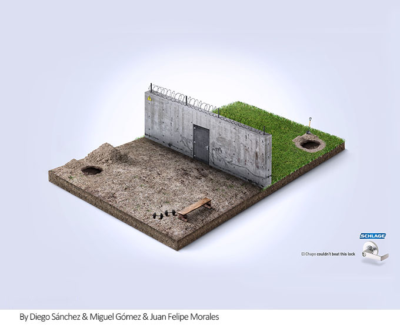
（1）主次分布的平衡构图。此构图为突出表现重点的手法，重点突出冲击力强。
（2）散点分布的平衡构图。此构图适合表现那种以平均均衡的关系，达到面面俱到和谐共生的效果。
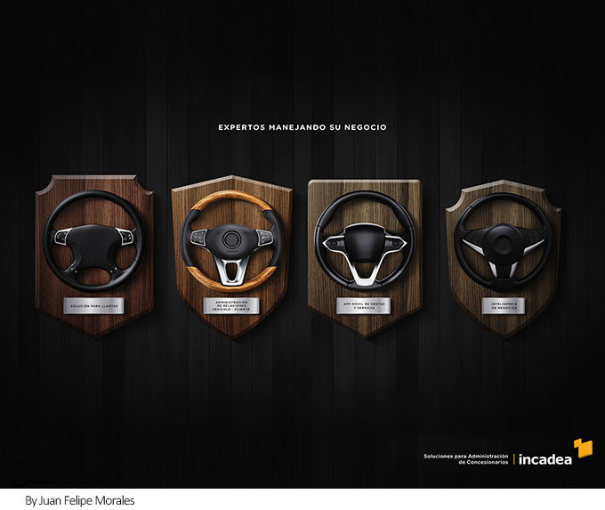
对比与调和
对比是强调整体中各部分的差异性，突出某个局部固有的个性。调和是对比的减弱，是在物体之间找到它们共通的构成要素使对比减弱加强事物的相互联系。创作中常用的对比因素很多，从点、线、面的组织方面，改变形与色的大小、强弱、虚实、色相、明度、纯度等等均可加强对比，使想突出物形象鲜明起来。给予观者更多动态的视觉刺激。
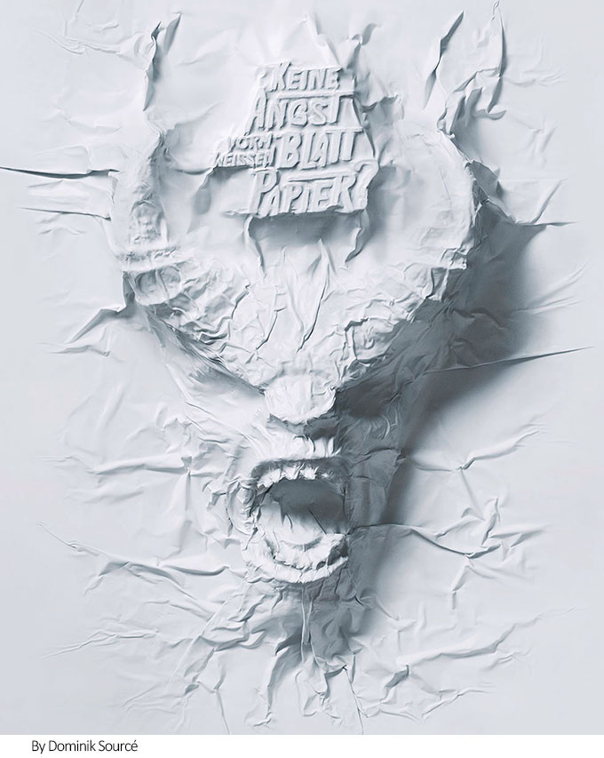
单纯强调对比会使画面缺乏一致性，没有调和的对比是没有意义的。调和之美在设计创作中主要体现在边框和画面内部的调和。总之，必须使主体与搭配有相应的内在联系，体现出调和之美，至于某些细节点缀有对比因素，只是达到丰富画面的层次而已。将对比与调和的特点运用到画面构图中，即可以使主题形象鲜明又不失与周围的和谐关系。
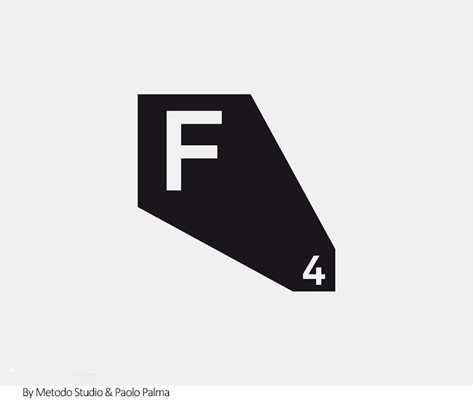
韵律美
构图中的韵律法则，是指形象组织之间运用高低宽窄的变化体现构图中的节奏韵律。在构图的具体实践中，对“节奏”的概念是建立在可视形象的基础上。音乐上的音的长短强弱，在设计中转化为点、线、面、形、色的运用。
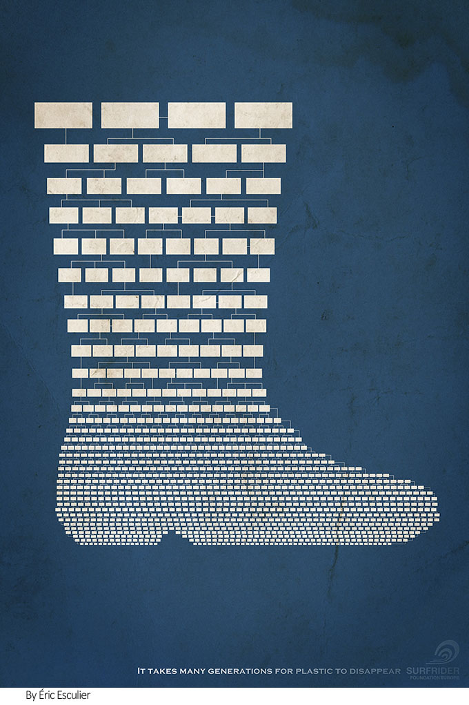
韵律感的表现手法主要通过有形状和线条在画面上的位置渐变、大小渐变、方向渐变、疏密渐变，并结合重复异形等解构手法突出。色彩上突出画面上的冷暖、明暗的渐变。节奏的表现也是创作者对意境的传达方式，狂野、灵动、幽静的意境皆可由节奏决定。
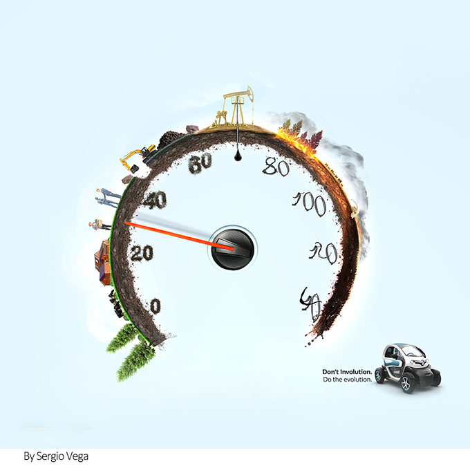
主次分明
要做到主次分明，首先要大胆取舍，全力肯定对象中精彩的部分，作为矛盾的主要方面，充分地发挥和表现，而对有碍画面效果的部分，要毫不犹豫地舍去。当然对客观对象的取舍要建立在深刻分析的基础上，按设计作品表现的意图，一般取舍对象集中表现的精彩部分作为画中最主要的形象，它是内容上表现的重点，也是构成画面形式的主要部分，因此要放在最主要的部位。
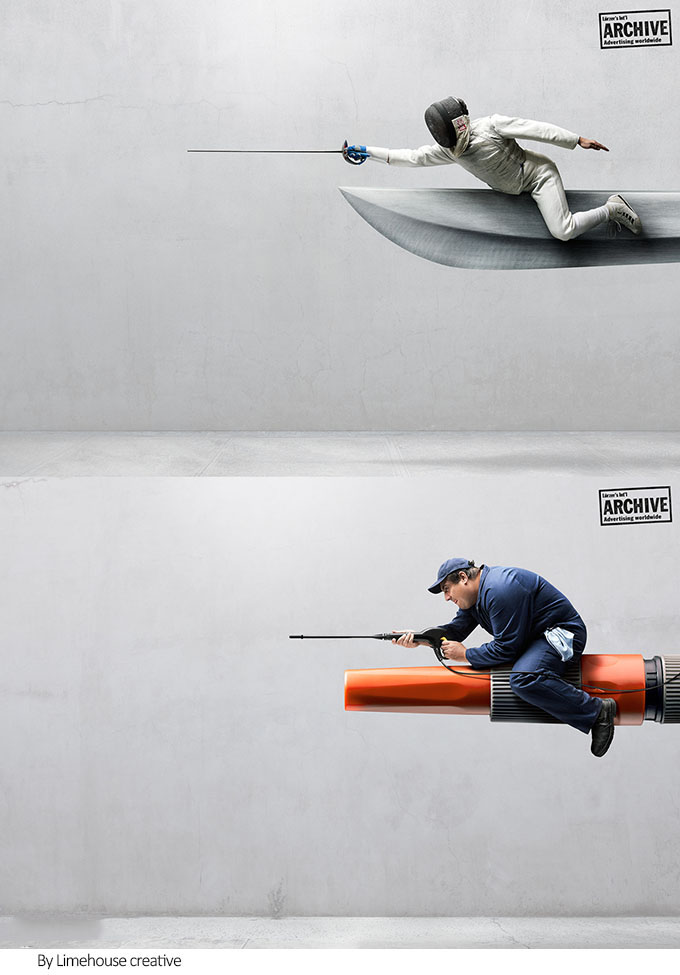
主体元素可以经过主观艺术思维，根据画面艺术处理的需要，进行适当的夸张和变形，因为夸张能给人感情上最大的满足，而且会使主体形象更典型、更丰满。次要的形象是为了陪衬主体，使主体更加突出。只有做到有主有次、有取有舍，才能共同构成一个和谐的画面整体。
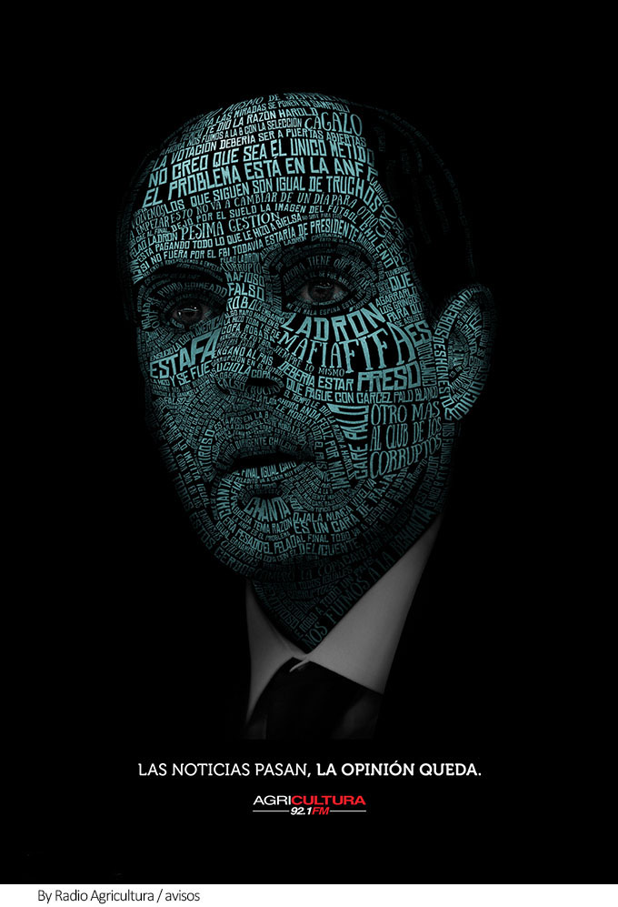
虚实相生
在构图中通过虚实处理，使元素之间形成空间层次，在虚实对比中产生节奏，是形成画面装饰效果，构成形式美的重要因素。虚实处理得当巧妙，更能造成意境上的含蓄性，使作品耐人寻味。所以在创作前，对构图位置的处理，通过各种变化的点、线、面来组织形象，以虚实为中心，并通过“疏密”、“聚散”、“轻重”、“浓淡”、“呼应”等组织规律来体现，用它来完成构图，创造画面意境。
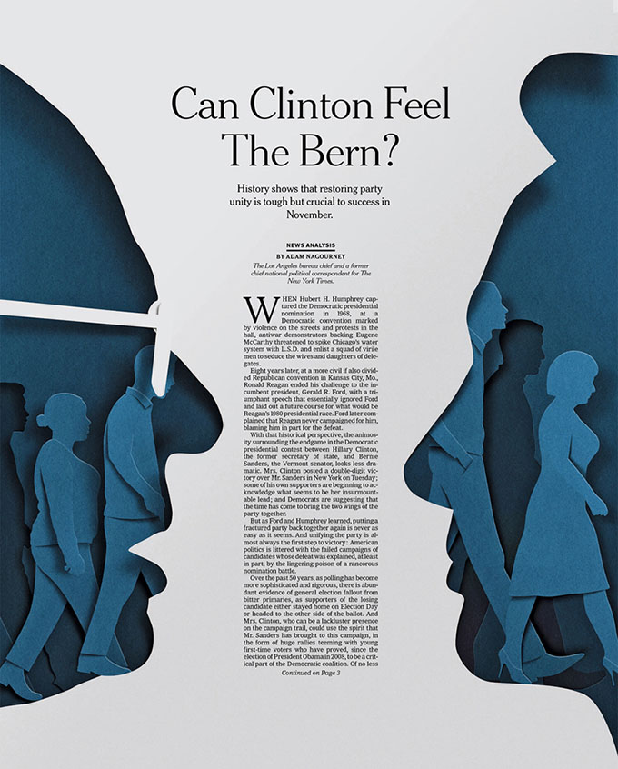
呼应
在考虑画面布局、组织景物形象时除了要注意主次、虚实、轻重等关系外，还要注意到各部分事物之间的呼应和联系。必须在确定主体物的同时配以与之相呼应的陪衬物，这样才能主次分明，有虚实轻重的对比关系，构图才完美。
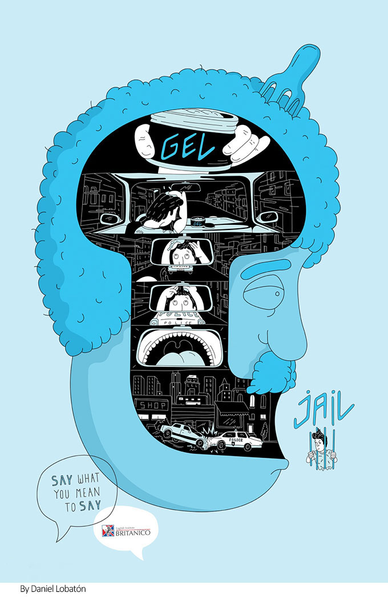
而这种呼应关系又表现为事物在形态气势上互相联系、互相顾盼，使画面总体气势上抱成一团，结构严密，气韵畅通。画面中的各类线条、元素，在对画面进行面积上的分割后，形成各种大小不同的块面结构，这些形态线条，不仅要互相呼应对比，而且要在对比中达到平衡。因为各类线条和黑白灰块面形成的轮廓线，其斜直、平方、圆曲等的形态变化，通过恰到好处的组合，能产生一种强烈的形式感和力的倾向，在对立的矛盾运动中互相制约，造成气势上的平衡和统一。
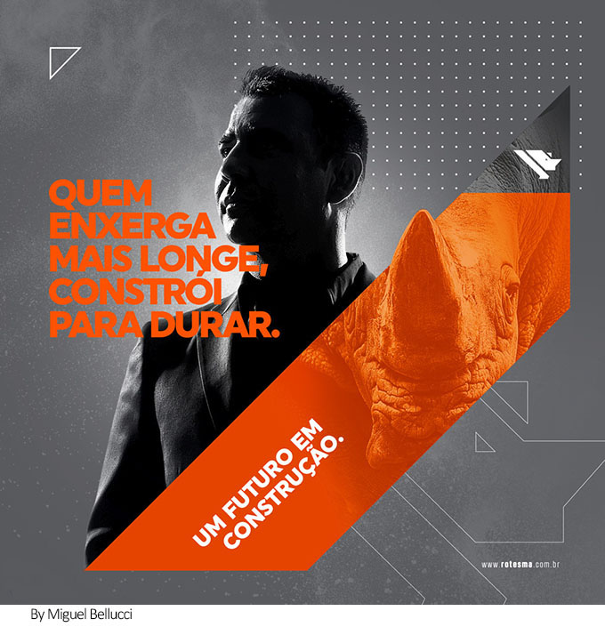
构图是设计作品创作的重要环节，好的构图方式自然有利于作品呈现。但除此之外，设计作品的高低还需建立在作品立意本身。“巧思”是作品的精髓。因此设计师还应把匠心与独特的构思融入到构图当中，尽可能完整的展示出自己的设计水平，创作出更加优秀色设计作品。
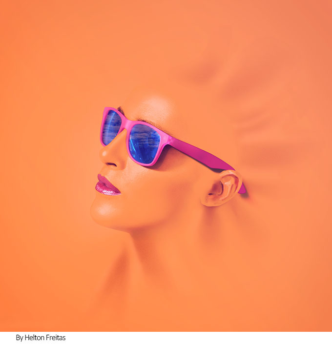

济南海右博纳品牌营销咨询有限公司
Copyright 2001-2019 All Rights Reserved Sivibrand.
王伟品牌顾问微信